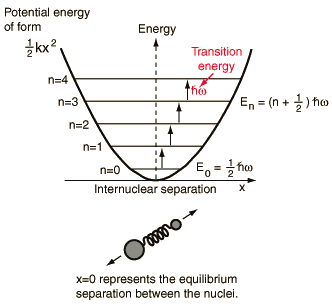

Introduction
A diatomic molecule has additional degrees of freedom when compared
to an atom because it has the ability to rotate and vibrate about its center of mass; see below
figure for illustraion of forces and hence torque on a molecule placed in external electromagnetic field.
The above figure shows that for every electronic state,
several vibrational states are associated with it.
Additionally, for every vibrational state, several rotational states are associated with it.
The electromagnetic waves excite the rotational levels of molecules (provided
the molecule has dipole moment), thereby exerting a torque on the molecule.
The frequencies of EM radiation absorbed or emitted by a transition between
the rotational energy states or the vibrational energy states will lie in
microwave \(\nu \lt 1011~{\rm Hz},~\lambda \gt 20~\mu m\)
or infrared regions \(\nu \gt 1013~{\rm Hz},~\lambda \lt 20~ \mu m\)
of the EM spectrum. From the rotation part of the IR spectrum,
we can calculate the bond length of a diatomic molecule.
From the vibration part of the IR spectrum, we can calculate
the bond force constant of the diatomic molecule.
Theory
The vibrational transitions of a diatomic molecule in its electronic ground
state can be approximated to a Simple Harmonic Oscillator (SHM). The rotational
transitions can be approximated to a rigid rotor.
In this lab, please distinguish between \(\nu\) (spelled 'nu') and \(v\) (alphabet 'v').
While the \(\nu\) is used to denote the frequency, the symbol \(v\) is used to denote
the vibrational quantum number.
Selection rule:
- For vibrational transitions: The molecule should have a dipole moment.
\( \Delta v = \pm 1, \pm 2, .. \), where \(v\) is the vibrational quantum number.
- For rotational transitions: \(\Delta J= \pm1\), where \(J\) is the rotational
quantum number.
Spectrum identification:

- The P-branch corresponds to all transitions where \(\Delta J=-1\)
- The R-branch corresponds to all transitions where \(\Delta J=+1\)
- The Q-branch corresponds to all transitions where \(\Delta J=0\)
Calculation of Bond force constant:

The transition frequency (\(\nu\)) between the vibrational levels is related to the molecular parameters by
$$\nu = 2 \pi \omega$$
where \(\omega\) is given by
$$ E_v = \left(v + \frac{1}{2}\right)\hbar \omega, ~~~~~
\omega= \left(\frac{k}{m_{eff}}\right)^{1/2}, ~~~~~v=0,1,2,3, \cdots $$
Where \(m_{eff}\) (reduced mass) is given by
$$ m_{eff} = \frac{m_1 m_2}{m_1 + m_2} $$
\(E_v\) is permitted energy levels.
The value of \(\omega\) is obtained from the IR spectra. Substituting the value of
\(m_{eff}\) we get the bond force constant.
Calculation of Bond length:
The rotational energy is given by
$$E_J= B J (J+1),~~~~~~~ J=0, 1, 2,\dots$$
where rotational constant \(B\), is given by
$$B= \hbar^2/2I$$
where \(I\), the moment of inertia is given by
$$I= m_{eff} R^2$$
where \(m_{eff}\) is the reduced mass.
The separation between the two illustrated vibration-rotation transitions
is assumed to be twice the rotational energy change from \(j=0\) to \(j=1\).
$$ 2 \Delta E_J = \hbar \omega$$
The value of \(\omega\) is obtained from the IR spectra. We get the moment of
inertia from the above equations and substituting \(m_{eff}\) in the moment
of inertia equation, we get the bond length.